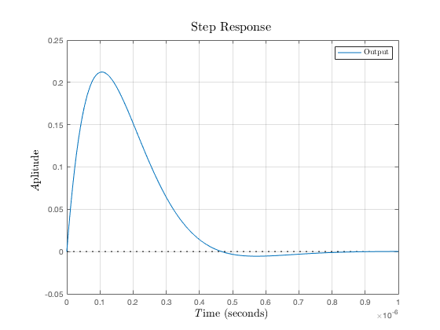
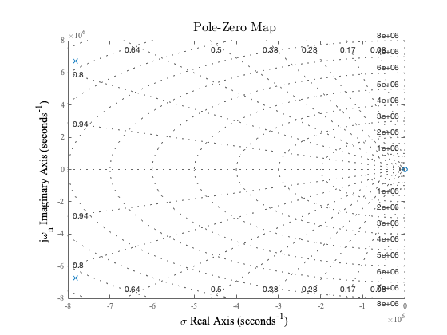

Contents
close all; clear; clc;
Given Parameters
R1 = 100000;
R2 = 100000;
L = 4.7e-3;
C = .001e-9;
G1 = 1 / R1;
G2 = 1 / R2;
Transfer Function
a = (G1 + G2);
b = ((G1 * G2 * L) + C) / (L * C);
c = G2 / (L * C);
numerator = [(G1 * G2 ) / C, 0];
denominator = [a, b, c];
Gs = tf(numerator, denominator);
figure(1)
step(Gs);
hold on
grid on
grid minor
xlabel('{\emph Time}','fontsize',14,'Interpreter','latex');
ylabel('{\emph Aplitude }','fontsize',14,'Interpreter','latex');
title('{Step Response}','fontsize',16,'Interpreter','latex');
legend('Output', 'fontsize', 10, 'Interpreter', 'latex');

Characteristic Parameters
wn = sqrt(c/a);
x = b / a;
zeta = x / (2 * wn);
System Response
characteristicRoots = roots(denominator);
figure(2)
pzplot(Gs)
hold on
grid on
set(gca, 'fontName', 'Times');
xlabel('\sigma Real Axis', 'fontName', 'Times', 'fontSize', 14);
ylabel('j\omega_{n} Imaginary Axis', 'fontName', 'Times', 'fontSize', 14);
title('{Pole-Zero Map}','fontsize',16,'Interpreter','latex');
